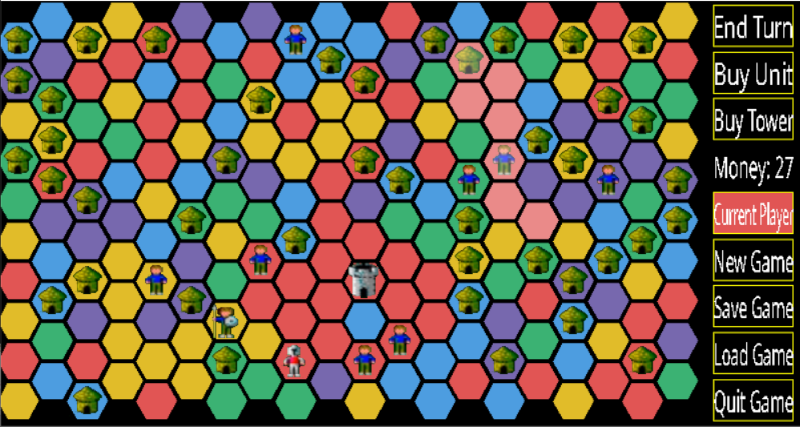
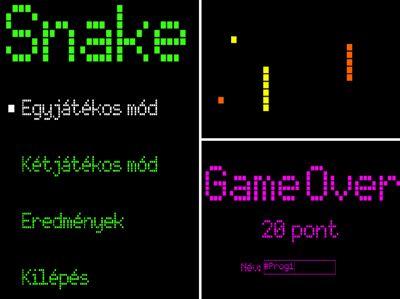

A választott házifeladatom az aknakereső játék elkészítése volt. A program egy SDL ablakban jeleníti meg a játékot. A játék kinézetében és az alap nehézségi fokozataiban az eredeti, Windows XP-s aknakeresőt idézi. A játékosnak ezen kívül lehetősége van tetszőleges méretű pályán is játszani, tetszőleges aknamennyiséggel. A játékot lehet szüneteltetni, elmenteni és visszatölteni; a legjobb nyerési időket nehézségenként lehet megtekinteni.
Egy kétdimenziós hexagonokból álló stratégiai játék; körökre osztott, hét játékos számára. A játék célja az, hogy az egyik játékos a Unitokat használva elfoglalja a térképen az összes hexagont. Két Unit egyesítésével egy erősebb Unit jön létre, amivel gyengébb Unitokat le lehet győzni, de vigyázni kell, mivel az erősebb Unitnak magasabb a fenntartási költsége. A Unitokat nem lehet eladni, így meg kell találni az aranyközéputat a spórolás és a vásárlás között. Érdemes tudni még, hogy egy királyság kettészelésével csődbe lehet azt vinni az egyik felét.
A program a Conway-féle sejtautomatát valósítja meg az SDL2 grafikai könyvtár segítségével. Az élettér állapotát megadhatjuk manuálisan, illetve korábbi állás betöltésével, vagy akár véletlenszerű állapotot is kérhetünk. Az aktuális életteret elmenthetjük, annak méretét manipulálhatjuk, és bármikor visszatérhetünk az üres kezdőállapothoz. A sejtcsoport változásait nyomon követhetjük folyamatosan, vagy lépésenként megfigyelve, a szimuláció sebességét pedig szabadon változtathatjuk.
A nagyházimban fejlesztett alkalmazás egy útvonaltervező program, amely képes Magyarország két pontja között megtalálni a legrövidebb utat. Lehetőség van tetszőleges számú köztes csúcsot is megadni. A pontok kiválasztása a térkép megfelelő csúcsára való kattintással történik, de ugyanígy lehetőség van csomópontot törölni is. A Tervezés gombbal rajzolódik ki az útvonal pirossal és megjelennek az adatai szövegesen is. Ezt követően akár új útvonalat is tervezhetünk.
Az én házim szöveges fájlokat tömörít. Ezt a Huffman kódolás segítségével valósítja meg, azaz minden karakterhez hozzárendel egy az ASCII, UTF-8 vagy egyéb kódjuktól eltérő, változó hosszúságú bináris kódot. Az új kód hossza attól függ, hogy milyen gyakran van benne a szöveges fájlban; minél gyakrabban szerepel, annál rövidebb a kódja. A tömörítő program karakterenként olvas a bemeneti szöveges fájlból, és a megfelelő Huffman kódot beleírja egy bináris fájlba. Végül a tömörített fájlokat vissza is lehet állítani szöveges alakra. A képen látható huffman fa egy olyan fájl tömörítéséből jött létre, amelynek a tartalma a következő: javascript bad.
Az általam készített szókirakót két játékos tudja egyszerre egymás ellen játszani, előre megadott (15×15) méretű pályán. A játék célja, hogy minél hosszabb szavak lerakásával minél több pontot érjen el a felhasználó, ezáltal megnyerve a játékot. A játékos pontszáma a táblán elhelyezett betűk számától és értékétől, valamint a felhasznált mezők pluszpontjaitól függ.
A „Ki nevet a végén?” játékot SDL-ben valósítottam meg. Nagyrészt a rendes szabályokra épül, annyi különbséggel, hogy ha valaki szabálytalant lép (pl. saját bábuját akarja leütni, vagy azzal a bábuval szeretne lépni ami nincs lent a pályán) akkor elveszti a körét. A játék 2-4 játékossal játszható és lehetőség van az előző játékot folytatni a menüben „játék folytasása” gombra kattintva. Dobókocka dobást a felhasználó(k) a Space lenyomásával érhetik el, ennek az eredményét a console-ban láthatják. Ezután az 1-4-es gombokkal választhatnak, hogy melyik bábuval szeretnének lépni.
A programom a klasszikus TETRIS játék. A menüből lehet új játékot kezdeni előre megadott pálya szélességgel és magassággal, a 0. szintről kezdve. A menüben ezek a paraméterek megváltoztathatóak egy előre meghatározott intervallumon belül. Egy Dicsőségtábla is helyet kapott a programban, amit szintén a menüből lehet elérni, és a 10 legtöbb pontot elért játékos neve és pontszáma látható. A grafikai megjelenítést SDL-lel oldottam meg, amiben a játékos a billentyűzettel navigálhat a menüben és játszhat a játékkal. Az adatok bevitele SDL-ben készült szövegbeviteli mezőkkel történik.
Ebben a játékban a főszereplőnk egy kis tűzdémon figura, akinek célja, hogy a lehető legkevesebb lépésből eljuttassa a pályán található összes dobozt a tűzzel jelölt helyekre. Vigyázni kell azonban, hogy a dobozokat ne toljuk be a vízbe, ugyanis ekkor az adott szint újraindul, lépésszámunk megmarad, tehát halmozódik. Amint az összes doboz a helyére került, a játék tovább lép a következő pályára, illetve az utolsó pályát teljesítve a dicsőséglistára. A játékban öt különböző, szintenként nehezedő pálya található. Az ötödik szint teljesítése után dicsőséglistára lehet kerülni.

A programom egy színezgetős játék. A cél úgy kitölteni a feldarabolt területet, hogy az egymással szomszédos mezők nem lehetnek azonos színűek. A "Generate new map" gombbal indítunk új játékot, a felosztás mindig tökéletesen véletlenszerű. Ha a színezés szabályszerűen megtörtént, azt a program a képen látható módon "Ready" felirattal jelzi. A "Save to file" gombbal elmenthetjük az aktuális állás adatait is.
A program célja egy, a felhasználó által a programban grafikusan megtervezett logikai háló interaktív szimulálása, és az eredmény ugyanabban az időben való kijelzése. Nagyon fontos volt számomra az egyes logikai elemek magas szintű testreszabhatósága, így csak nagyon kevés modul működését szabja meg kód. A forráskód a következő linken érhető el: https://github.com/gorbit99/LogicSim/.
A program a standard aknakereső játékot valósítja meg, az SDL grafikus könyvtár felhasználásával.
- A játékosnak lehetősége van a téglalap alakú pálya méreteinek és nehézségének beállítására.
- A játék tartalmaz egy mentés funkciót (fájlba írás/olvasás).
- Ha a játékos egy olyan mezőre kattint, aminek környezetében egy akna sincs, akkor a program rekurzív algoritmussal körbejárja és felfedi az aknamentes területet.
- Jobb klikkel meg lehet jelölni (zászló) egy aknának gondolt mezőt.
Egy MIDI zene lejátszó szerkesztő móddal, ami támogatja a Type 0/1/2 típusú .mid fájlokat. Induláskor ki lehet választani a szintetizárort, amin le szeretnénk játszani a zenéket, ami erősen befolyásolja a lejátszás hangminőségét. A felülethez PDCurses-t, és a jelek küldéséhez a Windows Multimedia API-t használja. Viszonylag száraz volt a kinézete elsőre, ezért macska meg DNS lánc ASCII art is díszíti egyes helyeken.
A program egy elektronikus könyvtárat valósít meg, ami eltárolja a könyvek szerzőjét, címét, műfaját és kiadási évét. Az adatbázishoz lehet új könyvet hozzáadni, meglévőt törölni vagy módosítani. Ezen kívül lehet benne keresni a könyvek különféle adatai szerint. A programhoz készült felhasználói felület is, az econio könyvtárat használva. GitHub: https://github.com/zalandemeter12/Electronic-Library.
Flappy Bird-öt játszó mesterséges intelligencia szimuláció. Meg lehet-e tanítani egy rakás buta madarat arra, hogy navigáljanak a csövek között? Meg lehet-e ezt csinálni anélkül, hogy a programozónak kelljen egy bonyolult függvényt írnia erre a célra? Mi az a neurális háló? Mi az a genetikai algoritmus? A programom ezekre a kérdésekre próbál választ adni egy egyszerű szimuláció formájában.
A programom a Legyen Ön is Milliomos! című TV-s játék C-ben megvalósított változata. A grafikai felületet SDL-ben készítettem el. A játék során két segítséget tudunk felhasználni, a közönségszavazást és a felezést. Ha egy kérdést helyesen válaszolunk meg, akkor a nyereményünk nő, ez az összeg maximum 50 millió forint lehet. Akik a legtöbb pénzt nyerték, azok pedig felkerülhetnek a programban szereplő dicsőséglistára.
Ez egy 2-6 játékos által játszható társasjáték, SDL grafikával. A játékosok célja, hogy minél gyorsabban gyűjtsenek össze legalább 15 aranyérmet a játék során, és kijussanak az olimpiára. Érmeket gyűjthetnek a START mezőn való áthaladással vagy speciális mezőre lépéssel, de a már megszerzett érmeket könnyen el is veszíthetik. Továbbá vannak olyan mezők, amik még egy dobáshoz juttatják a játékosokat, vagy éppen néhány mezővel közelebb segítik őket a győzelemhez.
A japán puzzle játék, ezúttal egy haragos, zöld, csapkodó bajszú főhőssel. A program SDL2, SDL2_image könyvtárakat használ. Játékon kívül lehetőség van a pályák szerkesztésére, újak alkotására, és a pályakészletek mentésére, melyeket a felhasználók csereberélhetnek egymás között. Mentett játékállás is visszatölthető, és még a visszatöltés után is lehet undozni! A játék minden grafikus elemét, köztük a betűket is, magam rajzoltam.

Farmos játékom elkészítése során felhasználtam a Minecraft textúráit, valamint játékon belüli elemeit és logikáját. Ültetéshez víz segítségével lehet termékeny termőterületet létrehozni. Egyes terményeket magokkal, másokat saját maguk elültetésével lehet szaporítani. A játékos ezen kívül tud terményeket eladni és vásárolni emeráldokért cserébe, ezeket utána elköltheti fejlesztésekre (növelheti a termőterületet, a növekedési sebességet, vagy a betakarításkor kapott termények számát). A játéknak nincs konkrét vége, menthető és bármikor folytatható.
Klasszikus aknakereső játék. Célja megtalálni az összes olyan mezőt amely nem rejt bombát, ehhez a mezőkön szereplő számok nyújtanak segítséget. Kinézetben próbáltam minél inkább az eredeti játékhoz hasonló hatást elérni. A játékban három előre meghatározott nehézségi fokozat van, de akár mi magunk is eldönthetjük mekkora pályán és hány bombával kívánunk játszani.

A program képes ismertségi hálózatokat megjeleníteni és ezekben szociológiai jelenségeket modellezni; kiszámítja a közösség minden tagjára, hogy ismerősei mekkora arányban rendelkeznek egy adott tulajdonsággal, és képes ezen tulajdonságok terjedését léptetve megjeleníteni egy megadott terjedési küszöb mellett.
A program segítségével repülőjáratokat, valamint foglalásokat lehet nyilvántartani/kezelni. Az alkalmazás felhasználói módjában lehetséges elvégezni olyan műveleteket, amelyeket általában egy internetes repülőjegy vásárlásnál is lehet, az adminisztrációs felület pedig további opciókat nyújt (új járat felvétele, járat törlése, nem publikus adatok listázása). A program konzolos menürendszert használ, a hagyományos „Press this key to open this” felépítést egy kicsit továbbfejlesztve, a billentyűzeten található nyilakkal lehetséges navigálni a menüpontok között.

Valljuk be, mindenkinek jól jönne néhány plusz kredit... De aggodalomra semmi ok, hisz épp erre nyújt megoldást az InfoClicker, egy klasszikus idle kattintgatós játék, ahol a fő valuta az áhított kredit. Az InfoC bagolyra kattintva szerezhetünk krediteket – bárcsak a valóságban is ilyen egyszerű lenne – amiket elkölthetünk olyan dolgokra, amik aztán automatikusan krediteket fognak nekünk generálni. Harminc kreditet félévre válthatunk, kétszáztízért pedig diploma jár, de vajon hány kreditért mondhatjuk majd magunkénak a Schönherzet, és milyen fejlesztésekkel láthatjuk el a Neptunt vagy akár az Anna-Kriszt? Ha kedved támadt bármi más produktív dolog helyett utánajárni ezeknek a kérdéseknek, ezt a linket követve ki is próbálhatod: https://github.com/kisGyeni/InfoClicker.
A játék a jól ismert aknakeresőt valósítja meg SDL-ben. A pályaméret és a bombák számának megváltoztatása mellett, a játékos egy felhasználónevet is megadhat. Sikeres játszma esetén a játék egy pontszámot generál a játékosnak. A program az így kapott eredményekből egy toplistát készít, ami a 10 legjobb eredményt mutatja.
Szerény játék, minimalista stílussal, de még pont jó. A játékom egy menüvezérelt program, ahol választhatunk, a játékmódok közül, amelyek a „Singleplayer” és a „Multiplayer”. Továbbá képes a pontok („score”) és a legnagyobb pontszám tárolására és írására, valamint 2 játékos szimultáns játékára. Multiplayer módban egy játékos nyerésifeltétele: ha tovább marad életben mint a másik, vagy pedig 3000 pontkülönbséget szerez.
Én egy Snake játékot csináltam a megszokott szabályokkal, illetve kétjátékos móddal. Egyjátékos módban természetesen az a cél, hogy akkorák legyünk, mint maga a pálya. Többjátékosban viszont az, hogy a másik játékost magunkba kényszerítsük, hiszen csak akkor nyerünk, amikor a másik játékos nekünk ütközött. A játéknak három nehézségi foka van, illetve egy leaderboardja, ahol nehézségi szint szerint ki van írva a TOP 3.
A mindenki által ismert kígyós játékot valósítottam meg ahol a kígyók az almák felszedésével hosszabbodnak. Egy, illetve többjátékosmódra is van lehetőség. A kígyók keresztül tudnak menni a falon illetve a megevett almák számától függően gyorsulnak is. A legjobb 10 egyéni eredményt bármikor meg lehet tekinteni a dicsőséglista menüpontban.
Egy aknakereső játékot készítettem, amit az SDL2 grafikus könyvtár segítségével jelenítettem meg. A játék időre megy és lényege, hogy a játékos minden aknamentes mezőt felfedjen. A játékban lehetőség van az aknáknak hitt mezők megjelölésére (fehér mezők). Győztes játékot követően a játékos megadhatja nevét, mellyel felkerülhet a megfelelő nehézségi szint toplistájára. Ha viszont egy játékos aknára kattint (piros mező), mindegyik akna megjelenik (a korábban megjelöltek fekete alapon fehér X-szel, a többi piros X-szel) és a játék véget ér.
Ez a program az ismert Google Chrome dínós játékot valósítja meg. A lényege, hogy a dínó átugorja az akadályokat, vagy átbújjon alattuk. A játék célja, hogy a játékos minél több pontot érjen el. Az eredeti játéktól eltérően, itt meg lehet állítani a játékot, valamint van toplista is, ami eltárolja a top 5 legjobb eredményt, és az eredményekhez tartozó játékos nevét.
A program egy klasszikus amőbajátékot valósít meg, ahol a gép ellen lehet játszani. A játék kezdetén lehet állítani a játékpálya méreteit, valamint választhatunk a gép különböző stratégiái közül. Ezenkívül az aktuális játékot bármikor elmenthetjük, majd később visszatöltve folytathatjuk. A gép játéka néha meglepően jó, többször is megvert, bár ez inkább engem minősít, nem a programot.
A falu piacát hamarosan bezárják, és helyette zöldséges nyílik. A polgármester annak a gazdának adja az üzletet, aki legelőször le tudja szállítani az öt kitűzött terményből megadott mennyiségűt. A játékban egyszerre többen igazgatják a termőföldjüket, több gépről, kompetitíven. A piacon kereskedhetünk, szabotálhatjuk a többieket és beadhatunk a versenybe terményeket. Célunk az, hogy elsőként szállítsuk le a megadott növényeket vagy menjen csődbe a többi gazda.
A program a majdnem mindenki által ismert amőbát valósítja meg. A játék egérrel vezérelhető, van benne két- és egyjátékos mód, mentésre, betöltésre lehetőség, és mindez SDL grafikus megvalósításban. Egyjátékos módban lehetőség van megmérkőzni egy gépi játékos ellen, ami képes támadni, védekezni és több lépéssel előre számolni.
A házimban a klasszikus Tetris-t valósítottam meg. A grafikai részét SDL könyvtárak segítségével készítettem. Az alábbi képen látható a játéktér kinézete, amin mindig megjelenik a következő blokk, az előző elhelyezése után, valamint a többi ablak, amik végigkísérik a játékmenetet. A játék, név megadással végződik, ami a dicsőséglistához kell.
Házi feladatként a jól ismert aknakereső játékot készítettem el SDL segítségével. A játék célja, hogy felfedjük az összes mezőt úgy, hogy nem robbanunk fel közben. Lehet választani a három alap nehézségi szint közül, vagy meg lehet adni egyedi pályaméreteket is. A játék ranglistával is rendelkezik, ahol bármikor meg lehet tekinteni a legjobb eredményeket.
Ebben a játékban, egy labirintusban minél több ellenséget kell legyőznünk minél kevesebb idő alatt. A labirintus minden szintje random generált szobák sokasága. A szobákban ellenségeken kívül ládák is találhatóak, amik extra életen és sebzésen kívül akár kulcsokat és bombákat is tartalmazhatnak! A kulcsokkal bezárt ajtókat nyithatunk ki, a bombákkal pedig falakat illetve ellenségeket robbanthatunk fel. A játékot a nyilakkal irányíthatjuk. Egy nyíl lenyomására főszereplőnk elkezd abba az irányba elcsúszni, egészen addig, amíg bele nem ütközik valamibe. Viszont ügyelnünk kell, hogy ügyesen csúszkáljunk, hiszen A pontból B pontba nem egyértelmű az utunk!
A kalandjáték lényege, hogy saját történetünk lehet az antik Görögország világából. Természetesen úgy, hogy az ókori szörnyek és mitológiai lények léteznek. A történet eleje minden játékosnak ugyanaz, viszont később sokkal – ha nem is teljesen – különböző szálakat kaphatnak és ezzel együtt végeredményt. A történet haladása közben figyelnünk kell arra, hogy az általunk választott származásnak hatásai vannak a cselekményre. Származásunk ötféle lehet: származhatunk Arésztól, a háború istenétől, Poszeidóntól, a háborgó tengerek istenétől, Athénétől, a bölcsesség istenétől, Hermésztől, az istenek hírnökétől vagy lehetünk halandók is, félisten helyet. Felmenőnktől kapunk egy felszerelést és egy speciális tulajdonságot, amely a későbbiek során segíthet minket. Azzal, hogy félistenek lettünk nem csak előnyök járnak, hanem hátrányok is. Példának okáért, ha az adott szituációban kedvező lenne jóban lenni a hadak istenével, viszont apánk, vagy anyánk nincsen jóban vele, Arész minket sem fog szívlelni, tehát nem fog segíteni.
A történet a megfelelő formátummal elkészítettre cserélhető, így a játék akármikor lehet szinte teljesen más, vagy kaphat új fejezetet. Menteni bármikor tudunk a játék során és néha érdemes is, mivel nem mindig egyértelmű, hogy melyik válasz húz ki minket a szorult helyzetekből. Menteni akármennyit lehet, viszont az előző mentésünk ilyenkor felülíródik. További megkötés, hogy betölteni csak az első három különböző névvel mentett karaktert lehet, de a többi mentés nem vész el, csak nem kerül kiírásra.
SDL grafikával megvalósított, klasszikus kígyós játék, annyi extrával, hogy itt a felhasználó választhat egy, és többjátékos módok között. Amíg egyjátékos módban, a szokásos szabályokkal játszhatunk, azaz 1 étel felvétele esetén a kígyó egy egységet növekszik, és a felhasználó 1 ponttal gazdagabb lesz, addig többjátékos módban célunk, hogy a másik játékost elimináljuk, itt a pontok csak a méretre vannak hatással.
A cél minél több a pályán elszórt tárgy begyűjtése anélkül, hogy lebukna. A játékost a célja elérésében őrök, kamerák és lézerek akadályozzák. Az első kettő el lehet rejtőzni a füstbomba használatával, a második kettőt pedig ki lehet kapcsolni. Tartalmaz beépített pályaszerkesztőt, ahol felépíthető a terep és beállítható az őrök mozgásának időtartama, továbbá a kamerák, lézerek, kapcsolók vezetéke. A játék elkészítéséhez az SDL2, GLEW (OpenGL), FreeType és libpng könyvtárakat használtam.

A nagy házim egy amőba játék. Két módban is lehet játszani. Van egy „Player vs. Player” lehetőség, illetve egy „Player vs. AI”. Kezdetben meg kell adni a pálya méretét, majd a játékmódot és már játszhatunk is. A programom képes a játék elmentésére és visszatöltésére is, továbbá mérettől függően nő és csökken a pályákon megjelenő négyzet X és O. Az AI számos védekezési és támadási stratégiát is tud. (Fun fact: én vagyok az első, aki felkerült infoC-re félpucéran.)
A játék célja egy lézersugárnak a célba juttatása a pályákon lévő tükrök segítségével, a lézerlövő blokk megfelelő pozícionálásával. A képen a lila és a kék blokk sima tükör, a zöld pedig kettéosztja a lézersugarat, így lehetővé teszi azt, hogy több célt is el lehessen találni egyszerre. A játék 15 szintet tartalmaz, szintenként 5 pályával. A program értékeli a játékos teljesítményét, minden szinten három csillagot lehet szerezni, aszerint, hogy milyen gyorsan, milyen hatékonyan oldta meg az adott problémát.
Programom egy átlagos snake játék, amelyet próbáltam felturbózni saját pixelarttal és zenével. Egy-egy jászmánál választhatnak a játékosok, hogy egy- vagy kétjátékos, illetve egyszerű vagy "challenge" (öt zsákmányonként gyorsuló) játékmódban játszanak. A játékosok célja minél több zsákmányt szerezni a falak (és egymás) kikerülésével. Kifejezetten élvezetes volt tervezni a játékot.
A játékom a Ball Blast nevű mobilos játék utánzata. Célja, hogy a játékos minél több ideig életben maradjon, ezt viszont nehezíti, hogy a pályán pattogó labdákat kell kerülgetnie és lelőnie. A beállításoknál három nehézség közül lehet választani, ezektől függően változik a labdák és az életek száma. A menüből elérhető egy ranglista is, ahol a játékos legjobb 10 eredménye látható. Link: https://github.com/pintertamas/my-awesome-project
A nagy házi feladatomnak az ismert aknakereső játékot készítettem el, grafikus felületen. A játékos választhat előre beállított nehézségi szintek közül, vagy akár maga is beállíthatja a sorok, oszlopok, és az aknák számát. A program képes a játék állását elmenteni, betölteni, és nehézségi szintekre bontott dicsőségtáblát vezetni.
A Snaek mindenki kedvenc gyerekkori mobilos játéka, nem számít, hogy a 3310-es Nokián, vagy talán egy későbbi modellen találkoztunk vele először. Egy letisztult, minimalista modern verzióját alkottam meg nagyháziként. A legjobb eredmények felkerülnek egy ranglistára. Akár két személy is játszhat vele.
A házimnak az ismert kígyós játék megírását választottam. Az egész program menüből vezérelhető. Innen tudjuk elindítani a játékot, megnyitni a dicsőséglistát vagy megnézni az útmutatóban leírtakat. A játékot játszhatjuk egy, illetve kétjátékos módban is. A dicsőséglistára pedig annak a 10 legjobb játékosnak a neve kerül fel, akiknek az egyjátékos módban a leghosszabb volt a kígyójuk. (;
A Laser Maze játék saját változata, ahol a játékos egy robotot irányít. Feladata, hogy eljuttassa a lézereket kiindulási pontokból az érkezési pontokba. Ehhez portálokat nyithat és különböző tárgyakat vehet fel, illetve rakhat le. Minél gyorsabban sikerül a pályákat megcsinálnia, annál több pontot kap a játékos.
A játékomban egy űrhajót kell vezetni az aszteroidákkal tarkított űrben. A navigálást egy radar segíti, amely megjeleníti az űrhajó környezetében lévő objektumokat. Erre nagy szükség van, mivel egy ütközés általában végzetes kimenetelű. A játékot ketten is lehet játszani osztott képernyős módban. Ilyenkor a cél a másik űrhajó megsemmisítése. A küzdelmet saját készítésű zene és hangeffektusok teszik még élvezetesebbé.

A játék egy Conway’s Game of Life ihlette sejtszimulációs program. Lehet állítani a cellák állapotát, a szimuláció sebességét, a játéktér méretét, illetve az állapotot lehet fájlba menteni és onnan visszatölteni. A program különlegessége, hogy a játékos választhatja ki menüvezérléssel a cellák lehetséges állapotainak színeit és számát, illetve az állapotátmeneti szabályokat. Így létrehozható akár az eredeti CGoL szimuláció, vagy egy különleges formákba rendeződő színes kavalkád: a határ a felhasználó fantáziája. :)
A feladatkiírás szerint többféle rendezőalgoritmust kellett megvalósítani láncolt listákra. A jobb megértés miatt szerettem volna ezeket valahogyan vizualizálni, ezért egy SDL programban négyféle rendezés működését mutatom be, amiben szavakat ábécé sorrendbe rendezek. Ezeknek a hatékonyságát nyomon is tudjuk követni a cserék, illetve összehasonlítások száma által.
Egy körökre osztott stratégiai játék hatszögletű pályarészekből. A pénzedből vásárolhatsz egységet, amellyel területet foglalhatsz el; tornyot, amivel megvédheted a területeidet; végül pedig farmot, amivel növelheted a bevételedet. A játék célja okosan gazdálkodva, nyerő stratégiát alkalmazva a gép bázisának elfoglalása.
Ez egy farmos játék. A játékban a földeket neked kell venned (a már meglévő földek mellett lévő sárga dollárjellel). Hét növényt ültethetsz, amik magját a boltban lehet venni. Három eszközt lehet venni/használni, kapálni mindig kell a földeket, mert másképp nem lehet semmit se ültetni. Locsolni meg trágyázni csak néhány növény előtt kell. Máshogy néz ki a bevetetlen föld, a kapált, a frissen vetett, a félig már megnőtt növények földje, illetve a teljesen megnőtt föld. A megtermett növényeket a piacon lehet pénzre váltani.
A házim egy Geogebra-szerű program elkészítése volt az SDL grafikus könyvtár segítségével. A program tetszőlegesen sok alakzatot tud kirajzolni, képes egyenesekre merőlegest állítani és két egyenes metszéspontját meghatározni. A rajzolt kép menthető .svg formátumban, valamint vissza is tölthető a programba.
Egy különleges amőbát készítettem SDL-ben, ahol három különböző nehézségű bot ellen mérkőzhetünk meg. Ezen kívül van egy extra játékmód, ami minden egyes alkalommal nehezedik ha győzünk, maximum százszor. De a játék igazi különlegessége abban található, hogy a pálya bővül, ha a képernyő szélre kerül egy X vagy O, a kibővült pályán a WASD gombokkal tudunk a különöző irányokba mozogni.

A játékban folyamatosan érkeznek felülről formák, amiket úgy kell a játéktérben elhelyezni, hogy ne érjék el a pálya tetejét. Ha sikerül egy sort teljesen feltölteni ezekkel a formákkal, akkor az adott sor kitörlődik. A játék ezen kívül képes félrerakni az éppen érkező formát későbbi használatra, egyedi pályaméretet használni és az eredményeket egy külső ranglistában tárolni, amit a főmenüben jelenít meg.
Az Escape Room: Blackout egy érdemben egyszer végigjátszható szabadulószoba-játék. A játék elején a felhasználó egy ismeretlennek tűnő szobában ébred. Azonban miután meggyőződött, hogy az ajtó nyitva, ki akarja deríteni, miért került ide. Az íróasztali laptop a titok őrzője, a játék célja, hogy az egyre merülő gép négy számjegyű jelszavát kitalálja, melyet fiókot kinyitva, a foglyul ejtő áldozatainak számát kiderítve, morze-kódot megfejtve, valamint a lámpákkal játszva szerezhet meg. A szobából tárgyakat szedhet fel a készletébe, ezek segítenek a megoldásban. Nem minden tárgy segíti azonban a szabadulást. A felhasználót áramütés is érheti, vagy akár le is lőheti magát. Biztos, hogy valójában van kiút?
Ez a játék SDL2 grafikus könyvtár és az OpenGameArt.Org weboldalon elérhető, főleg Calciumtrice által készített szabadon felhasználható textúrák segítségével készült. A játék célja, hogy megszerezd a kijutáshoz szükséges kulcsot, és kijuss a labirintusból. Ám ez nem olyan egyszű, mint amilyennek elsőre hangzik. Az utadat veszedelmesnél veszedelmesebb szörnyek állják el. Viszont ahol szörnyek vannak, ott kincs is. Vajon elég ügyes vagy, hogy megszerezzed mindet, vagy csak a túlélésre játszol?
A játék az azonos nevű, sokak által ismert tévés kvízműsoron alapul. A játék során 15 egyre nehezedő kérdésre kell válaszolnunk ahhoz, hogy elnyerjük az 50 000 000 Ft-os fődíjat. E cél eléréséhez két segítség is a rendelkezésünkre áll: az egyikkel megfelezhetjük a válaszok számát, a másikkal pedig a nézők szavazatát használhatjuk fel a helyes válasz megtalálásához.
A házim egy klasszikus Snake elkészítése volt. A játék képes egy és kétjátékos módra, illetve az egyjátékos módban szerzett pontok alapján elkészíti a legjobb 10 eredmény dicsoséglistáját. A játékot megpróbáltam feldobni színek belevitelével, egyjátékos módban a játékos rgb kígyót irányíthat, míg a menüben és kétjátékos módban random sorsol színeket a megjelenéshez.
Én az eredeti Pipe Dream játéhoz hasonló programot készítettem. A játék célja, hogy a vízfolyást a pályán lévő összes csőbe eljuttassa a játékos. Három pályaméret közül lehet választani, nagyobb pálya megoldásáért több pont jár, de a forgatások száma és a megoldáshoz szükséges idő is számít. A legjobb eredmények megjelennek a dicsőséglistán.
A program a jól ismert aknakeresőt valósítja meg. Menüjéből lehet választani a három sztenderd játékmód közül, vagy indíthatunk egyéni játékot is. A három sztenderd játékmód megfelelő elvégzésével kerülhetünk fel a dicsőséglistára. Az egyéni játékmódban megadhatjuk a pálya hosszát, magasságát és az aknák számát. A játékban első kattintásra indul ez idő, a jobb felső sarokban pedig a felfedezetlen aknák számát láthatjuk.
A játék célja, hogy a pályánként megadott kezdeti pozícióból eljuttassuk az elektront a zöld csíkkal jelölt célba. Az elektron pályáját újabb fix helyzetű töltések pályára helyezésével tudjuk befolyásolni. Az elektron gyorsulását minden pillanatban az összes többi pályán lévő töltés által ráható erők eredője határozza meg. A dolgunkat falak is nehezítik. A kapható pontszámot sok minden befolyásolja: többek között, hogy mennyi idő alatt ért be az elektron a célba. A szerzett pontszáma alapján a játékos felkerülhet a dicsőséglistára.
A nagy házim egy Peer to Peer chat alkalmazás készítése volt. A lényege az, hogy több gép egy hálózatot alkotva kommunikál egymással, azaz nincs egy központi szerver, ami az üzeneteket továbbítja a klienseknek, hanem minden üzenet közvetlenül megy a feladótól a címzettig. Ehhez készítettem egy böngészőből elérhető felhasználói felületet is. A program forráskódja elérhető itt: https://github.com/Bazsalanszky/p2p-chat.
Nagy házi feladatnak egy Sokoban-klónt készítettem. A játék lényege, hogy a pályán lévő ládákat a lehető legkevesebb lépéssel juttassuk el a célterületekre. A ládákat csak tolni lehet, és egyszerre csak egy mozgatható. A játék induláskor kéri a nevünket. A főmenüben láthatók a pályák előnézeti képei, és egy toplista, ami pályánként mutatja a játékosok legjobb eredményeit. A szintek egy szövegfájlban vannak tárolva, így könnyű a listát saját pályáinkkal kiegészíteni. A megjelenítéshez OpenGL 3.3-at használtam.
Választott házi feladatom a jól ismert "Snake" játék pár kisebb módosítással. A játékban SIngle Player és Multiplayer módok közül lehet választani. "Single Player" módban a cél a pályán felbukkanó gyümölcsök összegyűjtése, melynek következtében a kígyó teste növekszik, a játékos pedig pontokat kap. A különbség a klasszikus játékhoz képest az, hogy itt háromféle gyümölcs is felszedhető. A piros alma eggyel megnöveli a testet és +1 pontot ér, a kék szilva felszedése már +2 pontot jelent, de cserébe a következő gyümölcs összegyűjtéséig a kígyó begyorsul. A rózsaszín "ultimate fruit" +3 pontot ér, illetve eltünteti a kígyó testét a könnyebb irányíthatóság érdekében. Éppen ezért utóbbi csak meglehetősen ritkán jelenik meg. A játék akkor ér véget, ha a kígyó a testébe harap. "Multiplayer" módban csak almák szedhetők fel, a játékmenet itt is ugyanaz. Ebben a játékmódban a game over-t az jelenti, ha valamelyik kígyó önmagába vagy éppen a másikba harap. Mindeközben a háttérben Skillet szól, hogy ne monoton csendben kelljen játszanunk.
A program konzolos megjelenítést alkalmaz, ezért a játék irányításához a nyilakat és az enter billentyűt kell használni, ezekkel lehet a menükben az egyes menüpontok közül kiválasztani azt, amelyiket szeretnénk, valamint ezekkel lehet kijelölni a mezőt, ahova le szeretnénk tenni a következő korongot. A játéktábla szélessége és magassága külön is állítható, továbbá a játékban a korongokon kívül bárminek a színét megváltoztathatjuk, 16 különböző szín közül választva.
A klasszikus Snake játékot készítettem el C-ben, grafikusan SDL segítségével. A játékban van egy- és kétjátékos mód. Egyjátékos módban a cél az, hogy minél több ételt fogyasszon el a kígyó, ezzel felkerülve a dicsőséglistára. Kétjátékos módban a túlélés a cél, az győz, aki tovább marad életben. A játékban billentyűzettel, a menüben pedig egérrel lehet vezérelni. A menüben lehetőségünk van beállítani a játék színeit, megtekinteni a dicsőséglistát, ahol a top 10 egyjátékos módban elért eredményt és az utolsó 6 kétjátékos módban lejátszott menet látható felhasználónevek szerint. Új játék indításánál lehetőségünk van kiválasztani, hogy milyen játékmódban szeretnénk játszani, és ennek megfelelően szövegdobozokba tudjuk beírni egy vagy két játékos nevét. Ezek után mehet is a játék. A játékban minden grafikát én készítettem.
A program egy offline közösségi oldal, amelyen titkosított jelszóval védett profilt lehet létrehozni. A felhasználók be tudják egymást jelölni ismerősnek, üzeneteket tudnak egymásnak küldeni, illetve megtekinthetik egymás profilját. A profilok az általános adatok mellett egy profilképet is tartalmaznak, amelyet a programban lehet szerkeszteni.
A 2048 nevű logikai játék C alapú megvalósítása; érdekessége, hogy tetszőleges méretű pályán lehet játszani. A kevésbé magabiztosaknak van visszalépési lehetőség, a versengésre vágyóknak pedig egy toplista. A játékállás elvesztése miatt sosem kell aggódni, mivel minden lépéskor elmenti az aktuális állapotot.
A klasszikus pac-man másolata. Az eredetinek a legtöbb fő funkciójával rendelkezik, mint például az ellenségek (az eredeti logikájukkal), a megehető pontok, valamint a játék végén beírható névvel, amivel a pontszám el is mentődik. A játék a raylib használatával készült, ami egy, az SDL-hez hasonló grafikus könyvtár, csak talán több funkcióval.
Hasonló a program, mint a közismert aknakereső, de annyiban eltér, hogy egy cella mindig ki van jelölve, és ezt a kijelölést lehet mozgatni a nyilakkal. A grafikus megjelenítés az SDL2 segítségével történik. Tartalmaz még egy főmenüből elérhető dicsőséglistát, melyet törölni is lehet, valamint egy segítség opciót, amiben a játék lényege és az irányítás van.